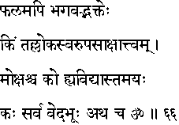
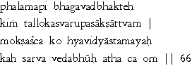

|

|
Verse 66 - Meaning:
Q:What (kim) is the reward for (phalam-api) devotion (bhakteh) to the Lord (bhagavad) ?
A:The actual realisation (saakshaattvam) of His Divine (tal-loka) Realm. (svaruupa)
Q:What is (ko-ca) liberation (moksha) ?
A:The ending (astamayah) of Ignorance. (hy-avidyaa)
Q:What (kah) is the source and dissolving centre (bhuuh) of all Veda (sarva-veda) ?
A:It is (atha-ca) the indeclinable sound Om or AUM. (Om is the pranava mantra - also spelled as AUM) .
|